Analyse av nettbutikk
Søkeord som trender for skobutikk
Sko
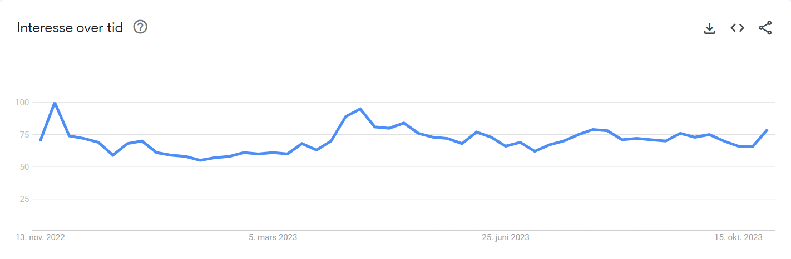Pensko
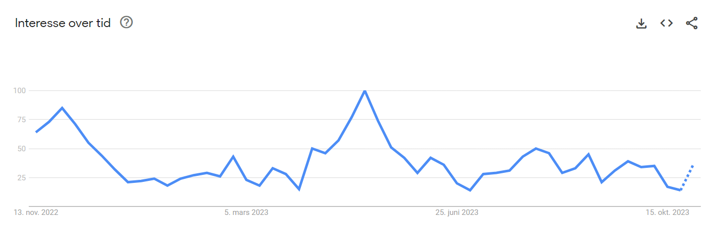Joggesko
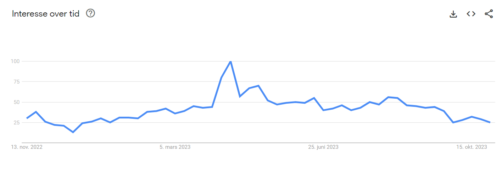Boots
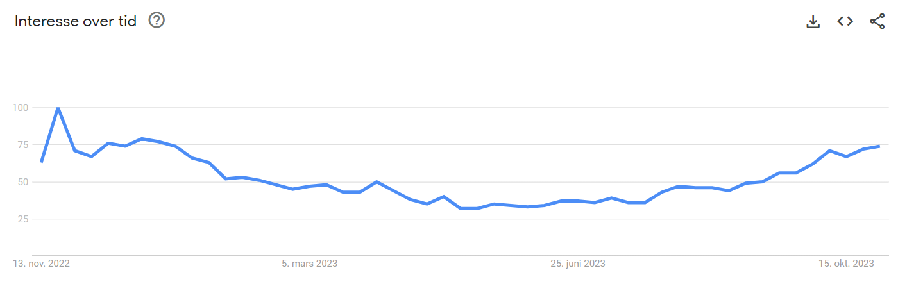Sandaler
Sandaler er kjekt å ha med, da det treffer utrolig godt på sommeren. 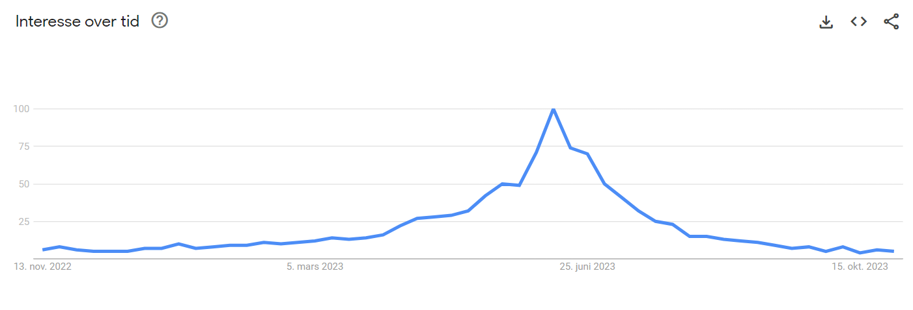Barnesko
Barnesko treffer mye bedre enn både Dame- og Herresko 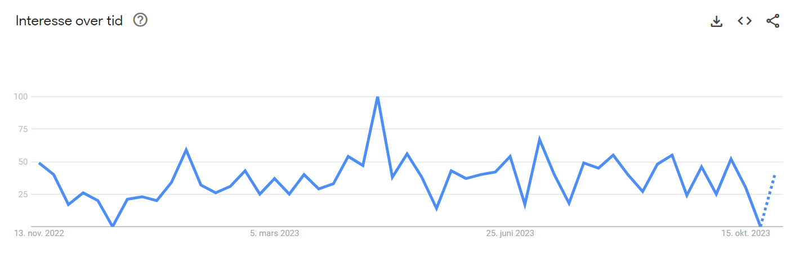Støvletter
Støvletter trender kjempebra nesten hele året, utenom midt på sommeren 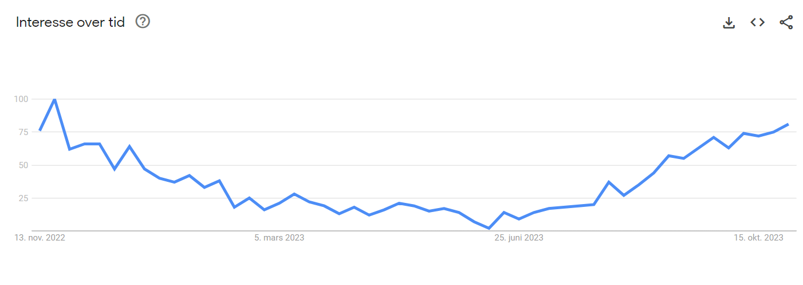Høyhælte sko
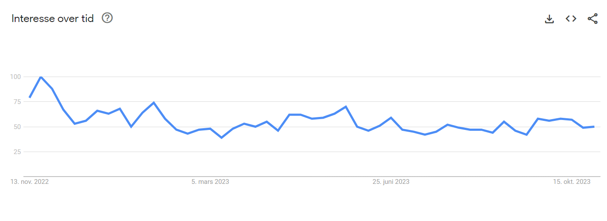Jeg har valgt disse ordene, ettersom at mange av de har en gjevn graf, eller har veldig høyt søketall i en lengre periode.
Disse ordene har også blitt valgt ut etter hva jeg har på nettsiden, og matcher skoene som jeg har i produktlisten.
Lighthouse analyse av alle 3 sidene på nettbutikken, før forbedringstiltak .
Første analyse av Index uten endringer.
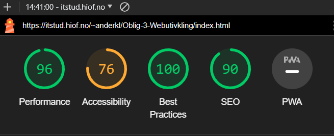Første analyse av Products uten endringer.
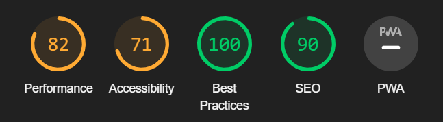Første analyse av Member uten endringer.
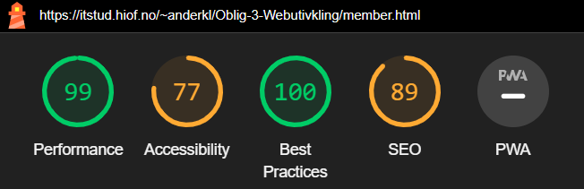Performance: Performance handler om hvor for nettsiden laster inn, og hvor fort brukeren kan bruke og navigere rundt på nettsiden etter den har vært åpnet
Måter å kunne forbedre dette på, er å ha mindre bilder, eller "lettere" bilder, da tunge bilder vil ta lenger tid å laste inn.
Accessibility: Accessibility vurderer hvor tilgjengelig nettsiden er for alle brukere, inkludert de menneskene som har nedsatt funksjonsevne
Tilgjenglighet kan forbedres ved å ha en semantisk struktur på nettsiden, legge til ALT="" tekster ved bilder, navigasjon med keyboard, konstraster og farger etc.
Alle små ting som gjør nettsiden mer brukbar og tilgjenglig for brukerne er med på å oppnå hen høy accessibility.
Best Practices: Best Practices refererer til metoder, retningslinjer og tilnærminger som anses som optimale for å oppnå spesifikke mål på nettsiden.
Disse praksisene er basert på erfaring og kunnskap, og de brukes for å oppnå høy kvalitet, effektivitet og konsistens i en bestemt sammenheng.
SEO: SEO står for Search Engine Optimalization. SEO gir innsikt om hvor godt nettstedet er opitmalisert for søkemotorer som Google. Det gir også råd om hvordan du
kan forbedre nettsidens rangering i søkeresultatene. SEO inneholder viktige faktorer som, Godt bruk av nøkkelord, Riktig metainformasjon, God ytelse, Sikkerhet, og mange andre faktorer.
UU-Analyse gjennom WEBAIM
WEBAIM Analyse av index.html, 3 ERROR i NAV-baren da knappene ikke har tekst, eller er linket til et nettsted
2 av alert-meldingene er at Dame-, Herre-, og barne-kategorien linker til products.html, mens det er en link til i tekst
som også linker til products.html
WEBAIM Analyse av Products.html, 3 ERROR i NAV-baren da knappene ikke har tekst, eller er linket til et nettsted 4 av alert-meldingene kommer av at form-select ikke linker til noe, men kun er der for pynt. 1 alert på for lang ALT="" tekst.
WEBAIM Analyse av Member.html, 3 ERROR i NAV-baren da knappene ikke har tekst, eller er linket til et nettsted
Alert-meldingen kommer av at Dame-, Herre- og Barne-kategorien linker til samme nettsted
SEO analyse av ShoeStore
Index
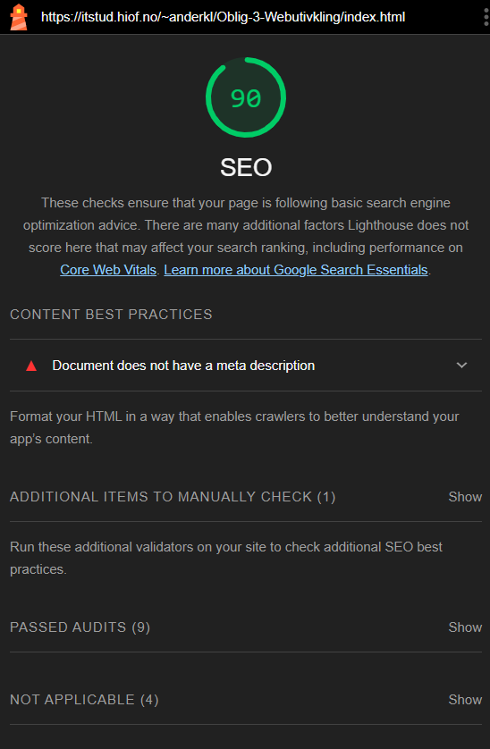Denne lighthouse analysen av Index.html viser at forsiden har en SEO score på 90. Scoren viser til at dokumentet ikke har meta-tags og at dette burde bli implementert i siden
Analysen viser også til at dataen som er strukturert er godkjent, flere godkjente audits. Analysen viser at nettsiden er godkjent for crawling, da alle linker kan benyttes på alle sidene.
Products
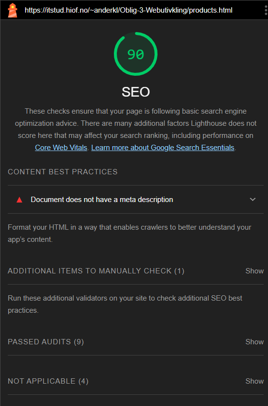Denne lighthouse analysen av Products.html viser til at produktsiden har en SEO score på 90. Scoren viser at dokumentet ikke har meta-tags og at dette burde bli implementert i siden
Analysen viser også til dataen som er strukutert er godkjent. Analysen viser til flere godkjente audits, som meta viewport, title, HTTP status, beskrivende alt-tekster, er crawable, ikke blokkert av index
og flere.
Member
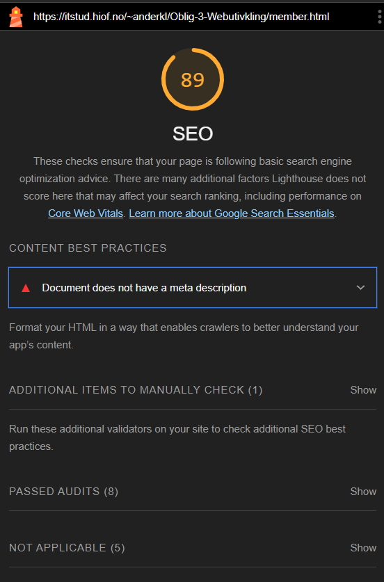Denne lighthouse analysen av member.html viser til at membersiden har en SEO score på 89. Denne scoren er lavere enn de andre, da jeg ikke har noen bilder, og ingen alt-tekster jeg kan beskrive med
Mye av de samme auditsa er like, utenom da ALT-tekstene, ettersom at det ikke er noe å beskrive for bilder.
Tabell over de forskjellige analysene
| Chat GPT | WebAim | Lighthouse |
|---|---|---|
| 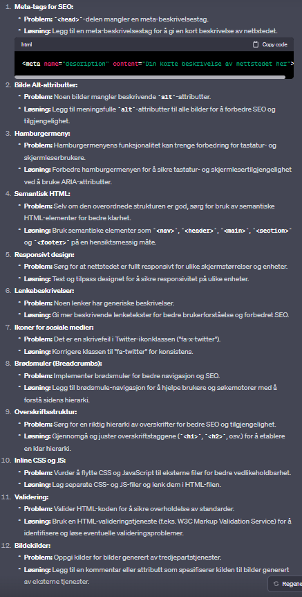 | 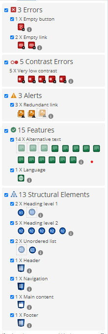 | 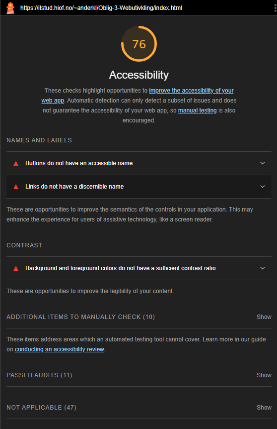 |
| Chat-GPT gir en fullstendig analyse, hvor han forklarer alle aspekter ved SEO og UU, og hvordan jeg kan forbedre alle de forskjellige punktene. | WebAim viser til med en interaktiv side, hvor det er feil, hva som er feil, og hva som må gjøres for å ordne opp i error og evenutelle warnings der det trengs. | Lighthouse gir en skriftlig beskrivelse av hva som er feil, men ikke hvor, eller hvordan man skal løse opp i probleme. Samtlige en dårligere forklaring enn de to andre metodene. |
Oppsummering av de forskjellige metodene
Når jeg har lest gjennom de forskjellig tilbakemeldingene fra de forskjellige metodene, vil jeg anbefale Chat-GPT og Webaim. De to er litt forskjellige, men viser bedre til hva som er feil, og hvor det er feil.
Chat-GPT kan vise nøyaktig hvor i koden det er feil, og generere en tilbakemelding dersom du lurer på noe med feilene. Chat-GPT kan også rette opp for deg, og gi alternativer der du trenger.
WebAim har løsningen at de viser deg koden din, viser hva som er feil og hvor, men har ikke noen funksjon for generativ tilbakemelding. Fordelen med WebAim er at de har en interaktiv side, der du kan bla rundt
og se rundt på nettsiden din hvor det er feil, og hva de forskjellige feilene betyr. Dette er en utmerket metode, dersom du kan koding ganske godt, og ikke tregner en generativ tilbakemelding på problemene dine.
Chat-GPT reagerer på twitter-iconet, og at jeg burde endre teksten på iconet for å beholde konsistens, noe WebAim ikke gjør. Chat-GPT sier også ifra om at jeg burde implementere en brødsmulesti, da dette vil hjelpe på navigasjon og SEO
Det virker som at Chat-GPT gir noen flere tilbakemeldinger enn det WebAim gjør, da chat-gpt har flere punkter og går over litt dypere ting enn det webaim gjør.
Lighthouse er veldig effektivt til å vite de forskjellige scorene på nettsiden din og for å gi deg en forståelse av hvor du ligger ann.
Men chat-GPT og WebAim er mye bedre dersom du vil ha en dypere forståelse av feilene i nettsiden og vite hvordan du kan optimalisere siden din.
Forbedringstiltak-liste
- Gitt Hamburgermenyen Aria-rollen og oppdatert script til at aria blir expanded for tastatur og skjermleser-brukere
- Endret strukturen i HTML til en mer semtantisk struktur, endringer i Header, Nav, Main og footer.
- Oppdatert hamburger-menyen
- Endret farge og tekst i hamburger-menyen til en mer generisk lenketekst og farge.
- Lagt til en brødsmulesti, for å hjelpe SEO til å forstå nettsiden hierarki.
- Flyttet js til en egen mappe "main.js".
- Lagt inn en omfattende meta-beskrivelse av nettsiden, slik at kunden vet hva de kan forvente av nettsiden.
- Lagt inn linker på iconer (Dette vil ikke gjør noe akkurat nå, da vi ikke skal lage flere enn 3 sider)
- Lagt inn tekst på logoen, da webaim sa at dette manglet.
- Endret grå-fargen på forsiden, slik at lesbarheten er bedre for de med nedsatt syn.
- Endret at kun "Herre" knappen viser til produkter, da dette ga error i webaim
Our Mission endringen
Gitt knappene lenker.
Lagt til flere alt-tekster
Lagt til en meta-description til nettbutikken.
Kun lenket en av kategoriene til products, WebAim sa ifra om en alert.